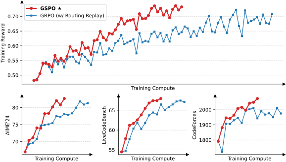
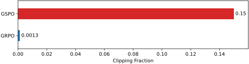
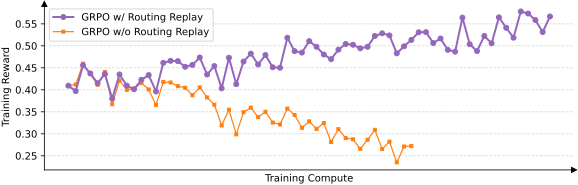

组序列策略优化
摘要
本文提出组序列策略优化（GSPO），这是一种用于训练大语言模型的稳定、高效且性能优异的强化学习算法。 与以往采用词元级重要性比率的算法不同，GSPO 基于序列似然定义重要性比率，并在序列级执行裁剪、奖励和优化。 我们展示出，与 GRPO 算法相比，GSPO 实现了更优的训练效率和性能，尤其显著稳定了混合专家（MoE）强化学习训练，并具有简化强化学习基础设施设计的潜力。 GSPO 的这些优点为最新 Qwen3 模型的显著提升做出了贡献。
1 引言
强化学习（RL）已成为扩展语言模型的关键范式 (OpenAI, 2024; DeepSeek-AI, 2025; Qwen, 2025b, a)。 通过大规模强化学习，语言模型能够进行更深入、更长的推理过程，从而获得解决复杂问题（如竞赛级数学和编程）的能力。
要在投入更多计算资源的情况下成功扩展强化学习，首要前提是保持稳定且鲁棒的训练动态。 然而，当前最先进的强化学习算法（以 GRPO 为代表 (Shao et al., 2024)）在训练超大规模语言模型时表现出严重的稳定性问题，往往导致灾难性的、不可逆的模型崩溃 (Qwen, 2025a; MiniMax, 2025)。 这种不稳定性阻碍了通过持续强化学习训练来拓展语言模型能力边界的努力。
本文指出，GRPO 的不稳定性源于其算法设计中对重要性采样权重的根本性误用和失效。 这引入了高方差的训练噪声，该噪声随着回复长度增加而逐步累积，并被裁剪机制进一步放大，最终导致模型崩溃。
为解决这些核心局限，我们提出 组序列策略优化（GSPO），一种用于训练大语言模型的新型强化学习算法。 GSPO 的关键创新在于其有理论依据的、基于序列似然的重要性比率定义 (Zheng et al., 2023)，这与重要性采样的基本原理相一致。 此外，GSPO 将归一化奖励计算为对同一查询的多个回复的优势，确保了序列级奖励与优化之间的一致性。
我们的实证评估展示出，GSPO 在训练稳定性、效率和性能方面显著优于 GRPO。 关键的是，GSPO 从根本上解决大型混合专家（MoE）模型强化学习训练中的稳定性挑战，消除了对复杂稳定化策略的需求，并展现出简化强化学习基础设施的潜力。 GSPO 的这些优点最终为最新 Qwen3 模型的卓越性能提升做出了贡献。 我们设想 GSPO 将成为一个稳健且可扩展的算法基础，使基于语言模型的大规模强化学习训练得以持续发展。
2 预备知识
符号说明
在本文中，将由 参数化的自回归语言模型定义为策略 。 我们用 表示查询，用 表示查询集。 给定回复 ，其对应查询为 ，其在策略 下的似然记为 ，其中 表示 中的词元数量。 查询-回复对 可由验证器 打分，得到一个奖励 。
近端策略优化（PPO）
利用由旧策略 生成的样本，PPO (Schulman et al., 2017) 通过裁剪机制将策略更新约束在旧策略的近端区域内。 具体而言，PPO 采用以下目标进行策略优化（为简洁起见，后文省略 KL 正则项，因为它并非本文关注的重点）：
| (1) |
其中词元 的重要性比率定义为 ， 优势 属于 ，由另一个价值模型估计，而 是重要性比率的裁剪范围。
PPO 在实践中的核心挑战在于其严重依赖价值模型。 具体而言，价值模型的规模通常与策略模型相当，带来相当大的内存和计算负担。 此外，算法有效性取决于其价值估计的可靠性。 虽然获得可靠的价值模型本身就具有挑战性，但确保其可扩展至更长的回复和更复杂的任务则面临更大挑战。
组相对策略优化（GRPO）
GRPO (Shao et al., 2024) 通过计算同一查询的一组回复中每个回复的相对优势，绕过了对价值模型的需求。 具体而言，GRPO 优化以下目标：
| (2) |
其中 是对每个查询 生成的回复数量（即组大小），重要性比率 和优势 均针对词元 ，分别为：
| (3) |
其中 中的所有词元共享与 相同的优势。
3 动机
模型规模、稀疏性（例如在混合专家模型中）以及回复长度的增长，要求在强化学习过程中使用大的采样轨迹批量大小，以最大化硬件利用率。 为提高样本效率，标准做法是将大批量的采样轨迹数据划分为多个小批量用于梯度更新。 这一过程不可避免地引入离策略学习设置，即回复 采样自旧策略 ，而非当前正在优化的策略 。 这也解释了 PPO 和 GRPO 中裁剪机制的必要性，该机制可防止过度“离策略”的样本参与梯度估计。
尽管裁剪等机制旨在管理这种离策略偏差，但我们发现 GRPO 中存在一个更根本的问题：其目标函数是不适定的。 在长回复任务上训练大型模型时，该问题尤为严重，会导致灾难性的模型崩溃。 GRPO 目标函数的不适定性源于对重要性采样权重的误用。 重要性采样的原理是估计函数 在目标分布 下的期望，其做法是对从行为分布 中抽取的样本重新加权：
| (4) |
关键在于，这依赖于对多个样本（）取平均，这些样本来自行为分布 ，这样重要性权重 才能有效校正分布不匹配。
相比之下，GRPO 将重要性权重 应用于每个词元位置 。 由于该权重基于单个样本 ，该样本来自每个下一词元分布 ，它无法发挥预期的分布校正作用。 相反，它向训练梯度中引入高方差噪声，该噪声在长序列上累积，并被裁剪机制加剧。 我们通过实证观察到，这可能导致往往不可逆的模型崩溃。 一旦发生崩溃，恢复训练也无济于事，即使回退到之前的检查点并仔细调优超参数（例如裁剪范围）、延长生成长度或切换强化学习查询也是如此。
上述观察表明 GRPO 设计中存在一个根本问题。 词元级重要性权重的失效指向一条核心原则：优化目标的单位应与奖励的单位相匹配。 由于奖励是赋予整个序列的，在词元级应用离策略校正似乎有问题。 这促使我们放弃词元级目标，转而探索利用重要性权重并直接在序列级进行优化。
4 算法
4.1 GSPO：组序列策略优化
虽然 GRPO 中的词元级重要性权重 存在问题，但我们观察到，在语言生成的语境下，序列级重要性权重 具有清晰的理论含义：它反映了回复 （从 采样）偏离 的程度，这自然地与序列级奖励相一致，也可作为裁剪机制的有意义指标。
基于这一直接的观察，我们提出 组序列策略优化（GSPO）算法。 GSPO 采用以下序列级优化目标：
| (5) |
其中我们采用基于组的优势估计：
| (6) |
并定义重要性比率 ，其依据是序列似然 (Zheng et al., 2023)：
| (7) |
因此，GSPO 对整个回复而非单个词元应用裁剪，以将过度“离策略”的样本排除在梯度估计之外，这与序列级奖励和优化都相匹配。 注意，我们在 中采用长度归一化，以减小方差并将 控制在统一的数值范围内。 否则，少数几个词元的似然变化就可能导致序列级重要性比率剧烈波动，且不同长度回复的重要性比率将需要不同的裁剪范围。 我们还注意到，由于重要性比率的定义不同，GSPO 与以往算法（如 GRPO）中的裁剪范围通常存在数量级差异。
4.2 梯度分析
我们可以推导出 GSPO 目标的梯度如下（为简洁起见省略裁剪）：
| (8) | ||||
| (9) | ||||
| (10) |
作为对比，GRPO 目标的梯度如下（注意 ）：
| (11) | ||||
| (12) |
因此，GSPO 与 GRPO 的根本区别在于它们如何对词元的对数似然梯度进行加权。 在 GRPO 中，词元根据各自的“重要性权重” 加权。 然而，这些不等的权重可能在 （对于 ）或 （对于 ）之间变化，其影响不可忽略，并且随着训练推进可能累积并导致不可预测的后果。 相比之下，GSPO 对回复中的所有词元赋予相同权重，消除了 GRPO 的这一不稳定因素。
4.3 GSPO-token：一种词元级目标变体
在多轮强化学习等场景中，我们可能希望获得比序列级更细粒度的优势调整。 为此，我们引入 GSPO 的词元级目标变体，即 GSPO-token，以允许按词元定制优势：
| (13) |
其中
| (14) |
且 表示只取数值而停止梯度，对应于 PyTorch 中的 detach 操作。 GSPO-token 的梯度可推导为：
| (15) | ||||
| (16) | ||||
| (17) |
注意，项 的数值为 1，因此 在数值上等于 。 对比式（5）与式（13），以及式（10）与式（17），当我们将回复 中所有词元的优势设为相同值（即 ）时，GSPO-token 与 GSPO 在优化目标、裁剪条件和理论梯度上数值完全相同，而 GSPO-token 具有按词元调整优势的更高灵活性。
5 实验与讨论
5.1 实证结果
我们使用从 Qwen3-30B-A3B-Base 微调得到的冷启动模型进行实验，并报告训练奖励曲线以及模型在 AIME’24（平均 Pass@1，对 32 次采样取平均）、LiveCodeBench（202410-202502，平均 Pass@1，对 8 次采样取平均）和 CodeForces（Elo 评分）基准上的性能曲线。 在强化学习训练期间，每批采样轨迹数据被划分为四个小批量用于梯度更新。 在 GSPO 中，我们将式（5）中的左、右裁剪范围分别设为 3e-4 和 4e-4。 我们以 GRPO 作为基线进行对比，并将式（2）中的左、右裁剪范围分别设为 0.2 和 0.27，我们已仔细调优这些值以确保公平比较。 注意，GRPO 需要采用 Routing Replay 训练策略才能使 MoE 强化学习正常收敛，我们将在 § 5.3 中额外讨论这一点，而 GSPO 已消除了对该策略的需求。
图1表明，使用 GSPO 的训练自始至终稳定进行。 我们观察到，GSPO 能够通过增加训练计算量、定期更新查询集以及延长生成长度，持续带来性能提升。 此外，在相同的训练计算量和消耗的查询数下，GSPO 还展现出优于 GRPO 的训练效率，取得了更好的训练准确率和基准性能。 最后，我们已成功将 GSPO 应用于最新 Qwen3 模型的强化学习训练，有力证明了 GSPO 在释放大语言模型强化学习扩展能力方面的有效性。

5.2 关于裁剪比例的有趣观察
GSPO 与 GRPO 的一个关键区别在于，它裁剪的是整个回复，而不是单个词元。 特别是，如图2所示，我们观察到 GSPO 与 GRPO 的裁剪词元比例之间存在两个数量级的差异（而调整裁剪范围并不会改变这一数量级上的差距）。 然而，尽管 GSPO 裁剪了显著更多的词元、因而用于训练（或梯度估计）的词元更少，其训练效率仍高于 GRPO。 这一反直觉的发现——裁剪更大比例的词元反而带来更优的训练效率——进一步表明，GRPO 的词元级梯度估计本质上是有噪声的，对样本利用而言效率低下。 相比之下，GSPO 的序列级方法提供了更可靠、更有效的学习信号。

5.3 GSPO 对 MoE 训练的益处
背景
我们此前的方法
为应对这一挑战，我们此前采用了路由回放训练策略。 具体而言，我们在中缓存激活的专家，并于中“回放”这些路由模式，以计算重要性比率。 这样一来，对于每个词元，和共享相同的激活网络，从而使我们能够恢复词元级重要性比率的稳定性，并确保在各次梯度更新中优化一致的激活网络。 图3表明，路由回放是 MoE 模型 GRPO 训练正常收敛的一项关键技术。

GSPO 的益处
尽管路由回放使 MoE 模型的 GRPO 训练能够正常收敛，但其复用路由模式的做法会带来额外的内存和通信开销，还可能限制 MoE 模型的实际容量。 相比之下，如图1所示，GSPO 消除了对路由回放的依赖，完全能够按常规方式计算重要性比率、正常收敛并稳定优化。 关键洞见在于，GSPO 只关注序列似然（即），而对单个词元的似然（即）不敏感。 由于 MoE 模型始终保持着其语言建模能力，序列似然不会剧烈波动。 总之，GSPO 从根本上解决了 MoE 模型中的专家激活波动问题，无需路由回放这类复杂的变通方案。 这不仅简化并稳定了训练过程，还使模型能够在没有人为约束的情况下发挥其全部容量。
5.4 GSPO 对强化学习基础设施的益处
鉴于训练引擎（如 Megatron）与推理引擎（如 SGLang 和 vLLM）之间的精度差异，实践中我们通常使用训练引擎重新计算采样回复在旧策略下的似然。 然而，GSPO 仅使用序列级而非词元级的似然进行优化，直观上，前者对精度差异的容忍度高得多。 因此，GSPO 使得可以直接使用推理引擎返回的似然进行优化，从而避免用训练引擎重新计算。 这在部分轨迹采样和多轮强化学习等场景以及训练-推理分离的框架中尤为有益。
6 结论
我们提出了组序列策略优化（GSPO），一种用于训练大语言模型的新强化学习算法。 遵循重要性采样的基本原理，GSPO 基于序列似然定义重要性比率，并进行序列级的裁剪、奖励和优化。 与 GRPO 相比，GSPO 展现出显著更优的训练稳定性、效率和性能，并在 MoE 模型的大规模强化学习训练中表现出特别的效力，为最新 Qwen3 模型的卓越提升奠定了基础。 以 GSPO 作为可扩展的算法基石，我们将继续扩展强化学习，并期待由此带来智能方面的根本性进步。
参考文献
- DeepSeek-AI [2025] DeepSeek-AI. Deepseek-r1: Incentivizing reasoning capability in llms via reinforcement learning. arXiv preprint arXiv:2501.12948, 2025.
- MiniMax [2025] MiniMax. Minimax-m1: Scaling test-time compute efficiently with lightning attention. arXiv preprint arXiv:2506.13585, 2025.
- OpenAI [2024] OpenAI. Learning to reason with LLMs, 2024. URL https://openai.com/index/learning-to-reason-with-llms/.
- Qwen [2025a] Team Qwen. Qwen3 technical report. arXiv preprint arXiv:2505.09388, 2025a.
- Qwen [2025b] Team Qwen. Qwq-32b: Embracing the power of reinforcement learning, March 2025b. URL https://qwenlm.github.io/blog/qwq-32b/.
- Schulman et al. [2017] John Schulman, Filip Wolski, Prafulla Dhariwal, Alec Radford, and Oleg Klimov. Proximal policy optimization algorithms. arXiv preprint arXiv:1707.06347, 2017.
- Shao et al. [2024] Zhihong Shao, Peiyi Wang, Qihao Zhu, Runxin Xu, Junxiao Song, Xiao Bi, Haowei Zhang, Mingchuan Zhang, Y. K. Li, Y. Wu, and Daya Guo. Deepseekmath: Pushing the limits of mathematical reasoning in open language models. arXiv preprint arXiv:2402.03300, 2024.
- Zheng et al. [2023] Chujie Zheng, Pei Ke, Zheng Zhang, and Minlie Huang. Click: Controllable text generation with sequence likelihood contrastive learning. In Findings of the Association for Computational Linguistics: ACL 2023, 2023. URL https://aclanthology.org/2023.findings-acl.65/.